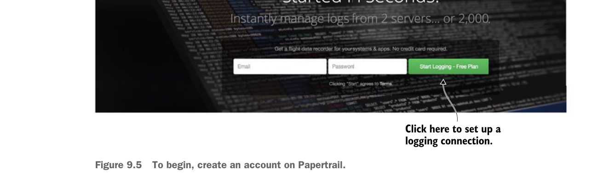
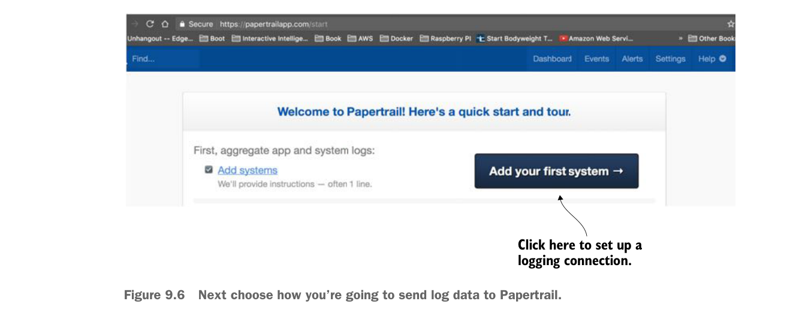

Để bắt đầu, hãy tạo tài khoản trên Papertrail.
9.2.2 Tạo tài khoản Papertrail và cấu hình connector syslog Papertrail
Bạn sẽ bắt đầu bằng cách thiết lập Papertrail. Để bắt đầu, truy cập https://papertrailapp.com và nhấp vào nút màu xanh lá “Start Logging – Free Plan”. Hình 9.5 minh họa điều này.
Papertrail không yêu cầu nhiều thông tin để bắt đầu; chỉ cần một địa chỉ email hợp lệ. Sau khi điền thông tin tài khoản, bạn sẽ được chuyển đến màn hình thiết lập hệ thống đầu tiên để ghi dữ liệu log. Hình 9.6 hiển thị màn hình này.

Tiếp theo, hãy chọn cách bạn sẽ gửi dữ liệu log tới Papertrail.